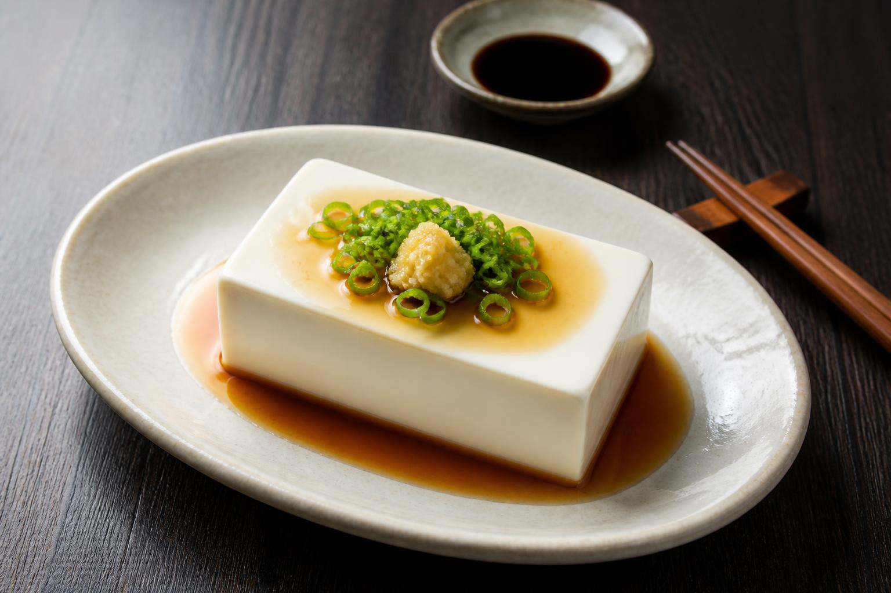

Tahu Putih Berprotein
Bosan dengan Tahu Putih Biasa? Ini Cara Membuat Tahu Putih "Berprotein" yang Gurih, Kenyal, dan Bikin Nagih!
Halo, pecinta kuliner rumahan! Siapa di sini yang suka tahu putih, tapi ingin variasi tahu yang lezat dan ada rasanya?

Tahu putih atau tahu sutra biasanya memang dikenal "polos", tidak ada rasanya, dan membutuhkan bumbu tambahan yang banyak agar enak. Namun, pernahkah Anda mencoba tahu putih berprotein seperti Tahu Premium atau Tahu Jepang? Tahu jenis ini biasanya memiliki tekstur yang lebih kenyal, padat, dan yang paling penting: rasanya sudah gurih sejak gigitan pertama, bahkan sebelum digoreng atau dimasak.
Rahasianya terletak pada campuran bahan tambahan yang mengikat protein kedelai dan memberikan rasa.
Dengan resep ini, kita bisa membuat tahu putih bercitarasa tinggi ala "tahu berprotein" didapur Anda. Jangan khawatir, Anda tidak perlu membeli mesin mahal!
Yuk, simak resep lengkapnya!
Apa Rahasia Tahu Berprotein Ini?
Berbeda dengan tahu putih biasa yang terbuat dari kedelai dan air saja, tahu berprotein (sering disebut juga tahu telur atau tahu padat) mendapatkan teksturnya dari penambahan telur dan tepung tapioka/sagu. Kombinasi ini menciptakan matriks yang padat, membuat tahu mampu menyerap bumbu lebih dalam dan memiliki rasa gurih alami yang "nendang".
Bahan-bahan yang Diperlukan
Untuk membuat 1 loyang tahu ukuran sedang, siapkan bahan-bahan berikut:
Bahan Utama:
- Kedelai Putih: 250 gram (bisa diganti dengan 1 liter Susu Kedelai Putih tawar siap beli agar lebih praktis).
- Air: 1 Liter (jika menggunakan kedelai utuh).
Bahan Campuran (Agar Kenyal & Berasa):
- Telur Ayam: 2 butir (kunci kekenyalan dan gurih).
- Tepung Tapioka (atau Tepung Kanji): 3 sendok makan (saring agar tidak menggumpal).
Bumbu Halus:
- 2 siung Bawang Putih (haluskan).
- 1/2 sdt Garam (sesuaikan selera).
- 1/4 sdt Lada Bubuk (opsional, untuk sedikit rasa pedas).
- 1/4 sdt Kaldu Jamur (opsional, untuk enhancer rasa).
Bahan Penggumpal (Coagulant):
- Cuka Putih / Perasan Jeruk Nipis: 2-3 sdm (atau bisa menggunakan air garam jenuh).
Langkah-langkah Pembuatan
Jika Anda menggunakan susu kedelai siap beli, Anda bisa langsung loncat ke langkah ke-3.
1. Membuat Susu Kedelai (Jika menggunakan kedelai utuh)
- Rendam kedelai selama minimal 6 jam atau semalam sampai mengembang.
- Blender kedelai dengan air secara bertahap hingga halus.
- Saring ampas kedelai dengan kain bersih. Peras sampai sarinya (susu kedelai) habis terambil.
- Masak susu kedelai di atas kompor dengan api sedang. Aduk terus-menerus jangan sampai pecah atau gosong bawahnya. Jika sudah mulai mendidih dan berbuih, kecilkan api dan masak selama 5-10 menit lagi. Matikan api dan dinginkan suhunya hingga sekitar 70-80°C (hangat, tidak terlalu panas).
2. Menyiapkan Adonan "Berprotein"
Sambil menunggu susu kedelai dingin, kita buat adonan yang membuat kenyal dan berasa:
- Dalam wadah, kocok lepas telur, bumbu halus, garam, dan lada.
- Masukkan tepung tapioka ke dalam adonan telur. Aduk rata hingga tidak ada gumpalan.
- Tuang sedikit susu kedelai hangat ke dalam adonan telur-tapioka ini sambil diaduk cepat agar telur tidak matang. Lakukan bertahap hingga menjadi adonan cair yang licin.
3. Proses Penggumpalan (Membuat Tahu)
- Tuang sisa susu kedelai hangat ke dalam panci besar.
- Masukkan cuka putih/perasan jeruk nipis sedikit demi sedikit sambil aduk perlahan.
- Anda akan melihat susu kedelai mulai menggumpal dan pecah menjadi butiran-butiran putih (curd) dan air hijau kekuningan (whey). Proses ini disebut koagulasi. Jangan diaduk terlalu keras, nanti curdnya hancur.
- Berhenti menuang cuka jika airnya sudah terlihat cukup jernih (bening kekuningan).
4. Mencetak dan Mengukus (Langkah Krusial)
Di sinilah perbedaan tahu biasa dan tahu berprotein:
- Siapkan loyang atau cetakan tahu. Alasi dengan kain bersih.
- Tuang curd tahu (ampas tahu) ke dalam kain sambil diperas sedikit untuk membuang kelebihan air, tapi jangan terlalu kering.
- Campurkan curd tahu ini ke dalam adonan telur-tapioka yang sudah kita buat di langkah ke-2. Aduk rata. Ini yang membuat rasanya meresap sampai ke dalam!
- Tuang adonan campuran tahu-telur-tapioka ini ke dalam loyang atau cetakan yang sudah diolesi sedikit minyak.
- Kukus dalam kukusan yang sudah panas selama 20-30 menit hingga benar-benar padat dan matang.
- Angkat dan dinginkan sebelum dipotong.
Tips Sukses Membuat Tahu Putih Berasa
- Suhu Penting: Saat mencampur cuka, pastikan susu kedelai tidak terlalu mendidih dan tidak terlalu dingin. Suhu sekitar 75-80°C adalah titik ideal agar protein terikat maksimal.
- Jangan Terlalu Banyak Tapioka: Tapioka memang membuat kenyal, tapi jika terlalu banyak, tahu akan jadi keras seperti bata. Takaran 3 sdm untuk 1 liter susu sudah pas.
- Alternatif Praktis: Jika malas repot menggumpalkan susu kedelai, Anda bisa menggunakan Tahu Sutra Putih yang sudah jadi (4 kotak). Hancurkan tahu sutra tersebut, campur dengan bumbu halus, telur, dan tapioka, lalu kukus kembali. Hasilnya kurang lebih sama dan super cepat!
Cara Menyajikan
Tahu putih buatan sendiri ini sudah enak digoreng biasa dengan sedikit garam dan bawang putih karena rasanya sudah menyatu. Namun, ini ide penyajian yang lezat:
- Tahu Krispi: Potong dadu, celup ke larutan tepung bumbu, goreng hingga kuning keemasan. Teksturnya akan super renyah di luar dan lembut kenyal di dalam.
- Tahu Isi: Tahu putih diisi sayur (wortel, tauge, kol), dibalut tepung bumbu lalu digoreng .
- Gado-gado atau Kupat Tahu: Karena bumbunya sudah meresap, tahu ini cocok banget dijadikan kupat tahu atau gado-gado.
- Sup atau Tumis: Tahu ini tidak akan mudah hancur saat dimasak di dalam kuah sup atau ditumis cabai hijau bersama kentang, koro kapri atau telur puyuh.
Selamat mencoba resep tahu putih berprotein di rumah! Dijamin, keluarga akan langsung bertanya: "Ini tahu beli di mana? Kok rasanya beda dan enak banget?"
Happy cooking!